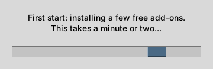
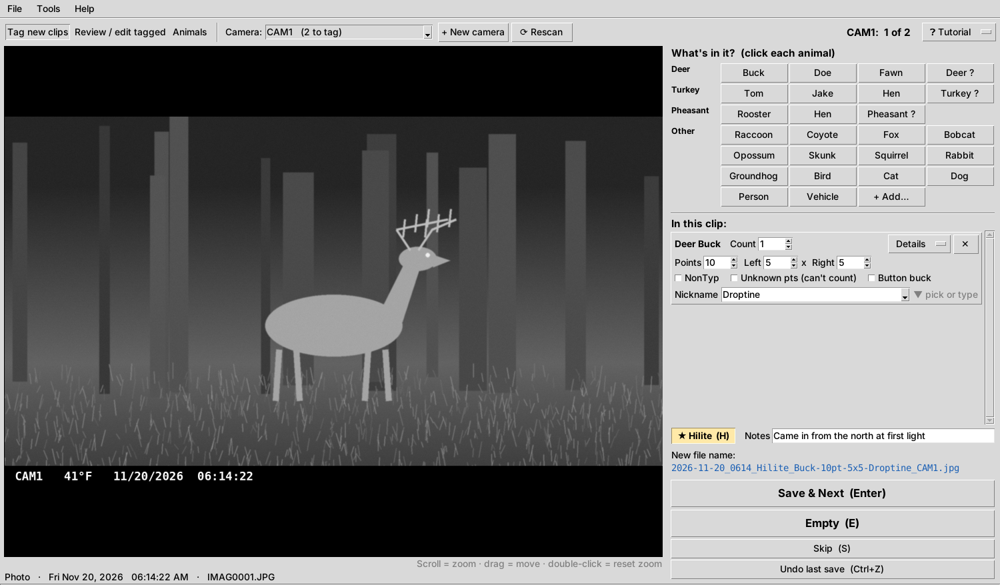

Getting started: what to download, how to set it up, and your first tagged clip. About 10 minutes.
What it does: you copy your trail camera SD cards into one folder, watch each clip in the program,
click the animals you see, and it renames and files every clip for you, e.g.
2026-11-20_0614_Buck-10pt-5x5-Droptine_CAM1.avi, and keeps a spreadsheet of everything.
Steps that are different on each kind of computer are marked
WINDOWSMACLINUX.
Just follow the one for your computer and skip the others.
1What you need
Item
Details
A computer
Windows 10 or 11, a Mac, or a Linux computer. Your clips can live on the computer, a USB drive or a network drive (NAS).
Python (free)
The engine the program runs on. You install it once, in step 2.
Internet, the first time only
On its first start the program downloads three free add-ons (video player, image tools, spreadsheet writer). After that it works offline.
The Trail Cams zip file
The program itself, already set up with its folders.
A spreadsheet app (optional)
To open Clip Log.xlsx: Excel, Numbers (Mac), LibreOffice, or upload it to Google Sheets.
2Install Python (one time)
WINDOWS
Go to https://www.python.org/downloads/ and click the yellow Download Python 3… button (version 3.10 or newer). Use python.org, not the Microsoft Store.
Open the downloaded file (it's in your Downloads folder).
Important: on the first screen, tick “Add python.exe to PATH” at the bottom, then click Install Now.
When it says Setup was successful, click Close.
python.org/downloads
Download the latest version for Windows
Download Python 3.x.x
The download page. Click the yellow button.
Python 3.x.x (64-bit) Setup
Install Python 3.x.x (64-bit)
→ Install Now Installs with default settings
→ Customize installation
Use admin privileges when installing py.exe
Add python.exe to PATHTick this!
First installer screen (simplified drawing). Tick “Add python.exe to PATH”, then Install Now.
MAC
Go to https://www.python.org/downloads/ and click the yellow Download Python 3… button. It gives you the macOS installer.
Open the downloaded .pkg file and click Continue / Agree / Install through the screens (enter your Mac password when asked).
When it finishes, close the installer. (It may open a Python folder in Finder; you can close that too.)
LINUX
Python is usually already there, but the window toolkit and venv pieces often aren't. Open a terminal and run:
Right-click it → Extract All… → choose where to put it (Desktop or Documents are fine, or a NAS or USB drive) → Extract.
Trail Cams.zip downloaded file
→
Open
Extract All…
Send to
Copy
→
Trail Cams your working folder
Don't skip Extract All. Windows lets you look inside a zip without extracting it, but the program can't run from inside the zip.
MAC
Double-click Trail Cams.zip in Downloads. A Trail Cams folder appears next to it. Drag that folder wherever you want to keep it (e.g. Documents).
LINUX
Right-click Trail Cams.zip → Extract Here, or in a terminal: unzip "Trail Cams.zip". Move the Trail Cams folder wherever you like.
You can rename or move the Trail Cams folder later; everything inside keeps working.
4What's in the folder
Trail Cams
The main folder. Keep everything together in here.
Trail Cam Tagger.pyw
WINDOWS ★ Double-click to start the program.
Start on Mac.command
MAC ★ Double-click to start the program.
Start on Linux.sh
LINUX ★ Run to start the program.
Clip Log.xlsx
The spreadsheet of every clip and animal. Made automatically.
Getting Started.pdf
This guide.
README.md
Quick reference for every feature.
Raw
★ Your inbox: copy SD cards in here, one folder per camera.
CAM1, CAM2, CAM3, CAM4
Rename them (e.g. EastRidge) or add more (CAM5) any time.
Output
★ Tagged clips end up here, renamed, by camera.
CAM1, CAM2, …
Clips with animals.
Empty
Clips with nothing in them.
TrailCamTagger
Program files, settings and your tag data. You never need to open it.
Each camera folder in Raw has a matching folder in Output. Make a new folder on either side and the program creates its partner and adds it to the camera list.
5Start the program for the first time
WINDOWS
Double-click Trail Cam Tagger.pyw.
Handy: right-click it → Show more options → Send to → Desktop (create shortcut) to start it from your desktop.
MAC
Double-click Start on Mac.command. The very first time macOS may say it can't be opened: right-click it → Open → Open (only needed once).
A Terminal window opens alongside the program; leave it open while you work.
LINUX
Double-click Start on Linux.sh and choose Run (or Run as a Program). If it opens in a text editor instead, run it from a terminal inside the Trail Cams folder: ./"Start on Linux.sh"
Then, on every computer: the very first time, a small window installs the add-ons. Wait a minute or two; it closes by itself.
The program opens and a step-by-step guide starts. Click Next ▶ to follow it, or Close to try on your own.
Trail Cam Tagger

First start only: installing the free add-ons.The program with the step-by-step guide. Bring it back any time with ❓ Tutorial (top right).
6Tag your first clip
💾 SD card DCIM\100MEDIA
→ copy →
Raw\CAM1 that camera's folder
→ tag →
Output\CAM1 renamed & filed
Copy the clips from the SD card into Raw\CAM1 (or the camera they came from):
WINDOWS In File Explorer: select all (Ctrl+A), Ctrl+C, open the Raw folder, Ctrl+V.
MAC In Finder: select all (⌘+A), ⌘+C, open the Raw folder, ⌘+V.
LINUX In your file manager: Ctrl+A, Ctrl+C, open the Raw folder, Ctrl+V.
Then, on every computer:
In the program, pick the camera from the Camera list at the top. The first clip starts playing.
Click each animal you see. A line appears for each one. For a buck, fill in Left and Right points (the total fills itself in) and give him a nickname if you like.
Click ★ Hilite for a great clip. Notes go in the spreadsheet.
Press Save & Next (or Enter). Nothing in the clip? Press Empty (E). Made a mistake? Undo (Ctrl+Z; on a Mac ⌘+Z works too).

A buck tagged with points, a nickname and Hilite. “New file name” shows exactly what the clip will be called.
Names start with the date and time, so the folder keeps them in order.
Clip Log.xlsx in the Trail Cams folder lists every clip, one row per animal, with filters ready to use.
Delete old clips or empties whenever you like. The program notices, and keeps their history in the spreadsheet.
To find clips, open Output and search for Buck, 10pt, Droptine, Hilite, CAM2…
WINDOWS Type in File Explorer's search box (top right).
MAC In Finder press ⌘+F, choose “Output” (not “This Mac”), and type.
LINUX In your file manager press Ctrl+F and type.
Next steps: use the ❓ Tutorial button's What's this? mode to learn any button, and see README.md for every feature:
Review / edit tagged, the Animals page (mark a buck harvested), and Tools → Settings to change the file name format and animal buttons.
8If something doesn't work
Problem
Fix
WINDOWS Double-clicking Trail Cam Tagger.pyw opens Notepad or asks which app to use.
Right-click it → Open with → Choose another app → Python (tick “Always use this app”). Or use TrailCamTagger\Start Tagger.bat.
WINDOWS “Python is not installed”, or nothing happens.
Install Python again (step 2) and make sure Add python.exe to PATH is ticked.
MAC “Start on Mac.command can't be opened.”
Right-click it → Open → Open. macOS only asks the first time.
MAC The Terminal says Python isn't installed.
Install Python from python.org (step 2), then double-click the file again.
LINUX The Terminal mentions tkinter, venv or ensurepip.
Run the install command in step 2, then start the program again.
LINUXStart on Linux.sh opens in a text editor.
In a terminal inside the Trail Cams folder: chmod +x "Start on Linux.sh" then ./"Start on Linux.sh".
“Couldn't install the add-ons.”
Check the internet connection and start the program again. If you installed a brand-new Python version, try the previous one from python.org.
A clip won't play.
Check it plays in your computer's normal video player. Very unusual formats may not be supported.
The spreadsheet doesn't update.
Close Clip Log.xlsx in Excel (or Numbers / LibreOffice). It updates as soon as it's closed.
Something else went wrong.
Details are saved in TrailCamTagger\error_log.txt. Send that file to whoever helps you.